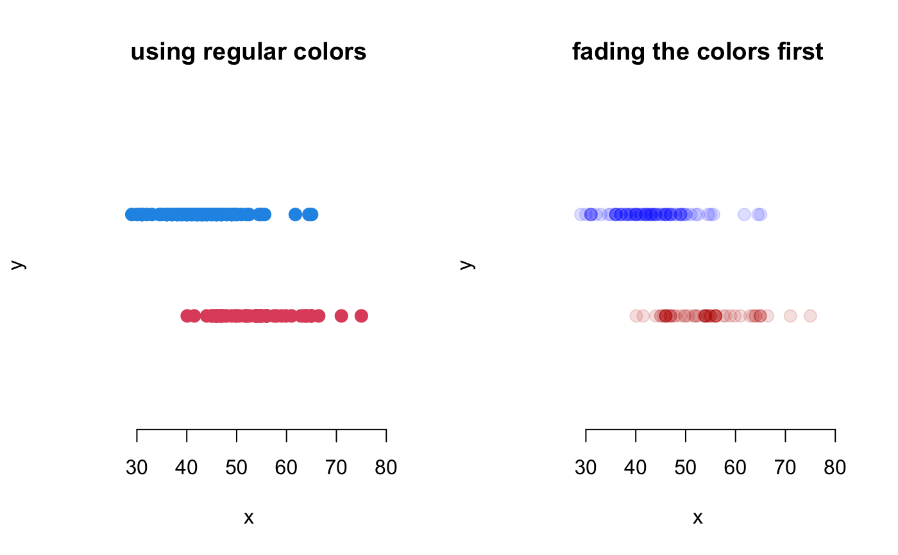
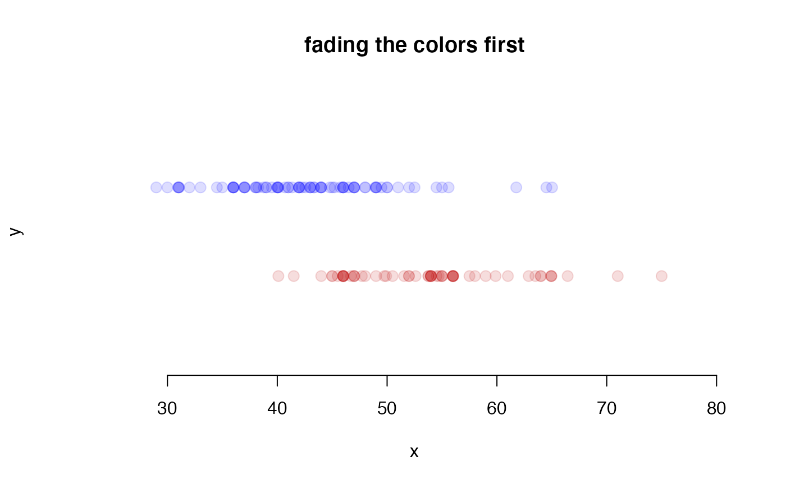
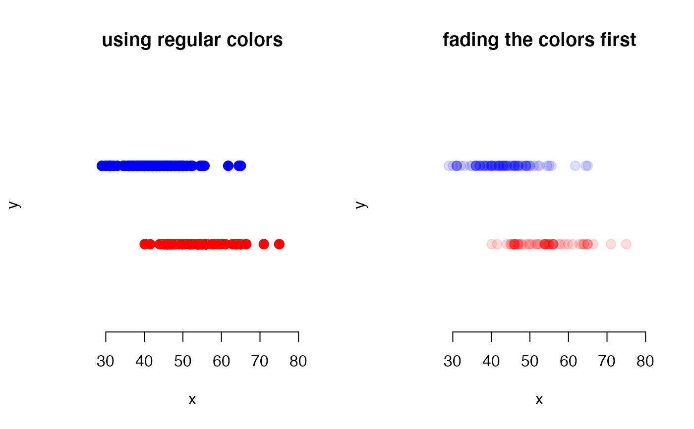
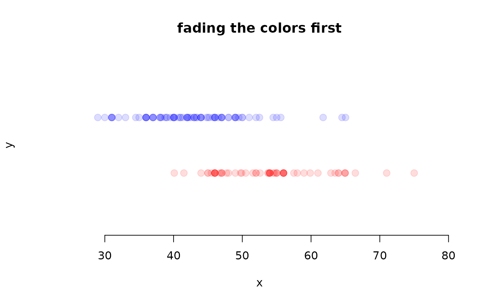

Fade colors so they are transparent.
fadeColor(col, fade = "FF")
| col | An integer, color name, or RGB hexadecimal. |
|---|---|
| fade | The amount to fade |
David Diez
data(mariokart) new <- mariokart$cond == 'new' used <- mariokart$cond == 'used' par(mfrow=1:2) #===> color numbers <===# dotPlot(mariokart$total_pr[new], ylim=c(0,3), xlim=c(25, 80), pch=20, col=2, cex=2, main2'using 'using regular colors' dotPlot(mariokart$total_pr[used], at=2, add=TRUE, col=4, pch=20, cex=2) dotPlot(mariokart$total_pr[new], ylim=c(0,3), xlim=c(25, 80), col=fadeColfadeColor'2, '22'20, cex20,2 main='fading'fading the colors first'dotPlot(mariokart$total_pr[used], at=2, add=TRUE, col=fadeColfadeColor'4, '22'20, cex20)2#===> color names <===# dotPlot(mariokart$total_pr[new], ylim=c(0,3), xlim=c(25, 80), pch=20, col='red', 'red', main2'using 'using regular colors' dotPlot(mariokart$total_pr[used], at=2, add=TRUE, col='blue', pch=20, cex=2) dotPlot(mariokart$total_pr[new], ylim=c(0,3), xlim=c(25, 80), col=fadeColfadeColor 'red', '22'20, cex20,2 main='fading'fading the colors first'dotPlot(mariokart$total_pr[used], at=2, add=TRUE, col=fadeColfadeColor,'blue', '22'20, cex20)2#===> hexadecimal <===# dotPlot(mariokart$total_pr[new], ylim=c(0,3), xlim=c(25, 80), pch=20, col='#FF000'#FF0000', main2'using 'using regular colors' dotPlot(mariokart$total_pr[used], at=2, add=TRUE, col='#0000FF', pch=20, cex=2)2 dotPlot(mariokart$total_pr[new], ylim=c(0,3), xlim=c(25, 80), col=fadeColfadeColor0'#FF0000', '22'20, cex20,2 main='fading'fading the colors first'dotPlot(mariokart$total_pr[used], at=2, add=TRUE, col=fadeColfadeColorF'#0000FF', '22'20, cex20)2#===> alternative: rgb function <===# dotPlot(mariokart$total_pr[new], ylim=c(0,3), xlim=c(25, 80), pch=20, col=rgb(1,0rgb,1c0x02, main2'using 'using regular colors' dotPlot(mariokart$total_pr[used], at=2, add=TRUE, col=rgb(0,0,1), pch=20, cex20)2 dotPlot(mariokart$total_pr[new], ylim=c(0,3), xlim=c(25, 80), col=rgb(1,0rgb1180,0p1/820, cex20,2 main='fading'fading the colors first'